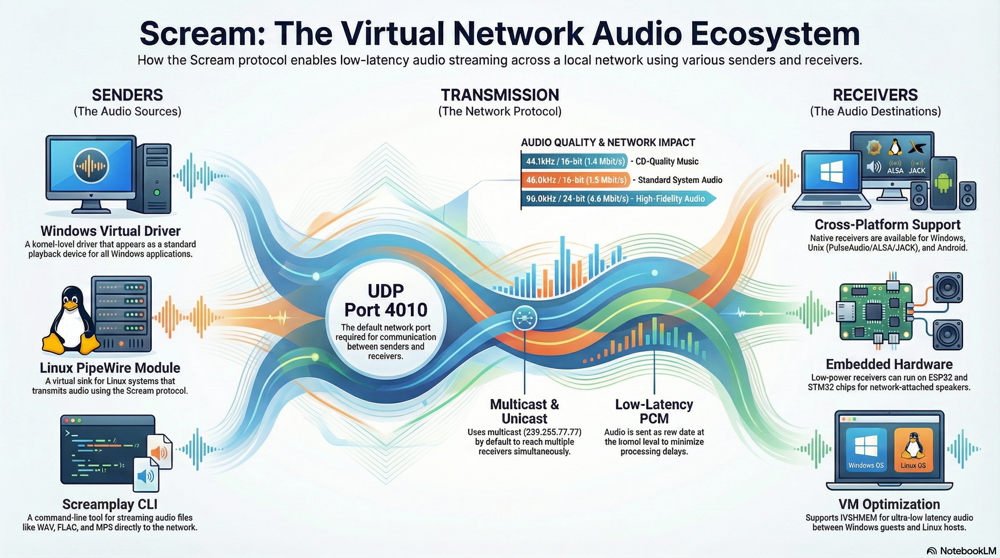
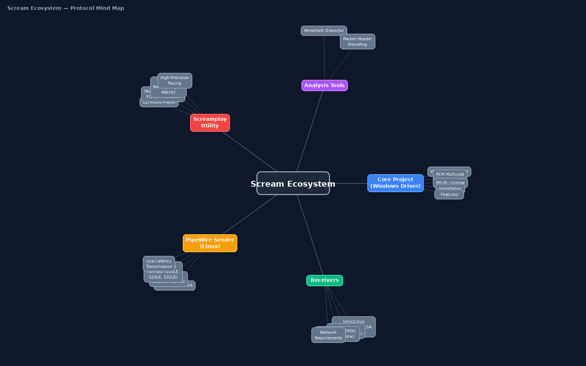

Stream, monitor, and route PCM audio effortlessly across Windows, Linux, and Android using the ultra-low latency Scream protocol.
The Scream ecosystem provides a way to transport uncompressed audio over local networks via UDP (Multicast or Unicast). It acts as a virtual audio cable over Ethernet/Wi-Fi, replacing physical cables for VM-to-Host audio, smart factory alerts, and remote device monitoring.

Every sender pushes 1157-byte UDP packets to the multicast group 239.255.77.77:4010. Every receiver joined to that group plays the audio. There is no server and no handshake.
┌──────────────┐ ┌──────────────────┐ ┌──────────────┐
│ Windows PC │ │ Linux PC │ │ Linux script │
│ Scream driver│ │ pipewire-scream │ │ screamplay │
└──────┬───────┘ └────────┬─────────┘ └──────┬───────┘
│ UDP multicast 239.255.77.77:4010 │
└──────────────┬─────┴────────────────────┘
▼
┌───────────────┼────────────────┐
▼ ▼ ▼
ScreamDroid Unix receiver ScreamReader
(Android) (Linux) (Windows)duncanthrax/scream)Provides a virtual Windows sound card driver that routes all system audio over UDP.
Installation itself does not require registry manipulation; you can simply use Windows Test Mode as shown below.
bcdedit /set testsigning oncd <scream folder>\Install\driver\x64
pnputil /add-driver .\Scream.inf /installbcdedit /set testsigning offYou must configure the driver's settings in the registry under Computer\HKEY_LOCAL_MACHINE\SYSTEM\CurrentControlSet\Services\Scream\Options (you will likely need to create the Options key). A reboot is required after changing these values.
To avoid sending empty packets (saving network bandwidth/battery on receivers), add a SilenceThreshold (REG_DWORD) key.
Example: Set to 10000 for a threshold of ~0.25 seconds at 44.1kHz.
If multicast drops packets on your network, you can switch to unicast. Add UnicastIPv4 (REG_SZ) with the target IP, and UnicastPort (REG_DWORD) with the port number (e.g., 4010).
zirize/pipewire-scream)Creates a virtual audio sink in PipeWire. Audio routed to this sink is transmitted via the Scream protocol.
pipewire-devel (or libpipewire-0.3-dev), cmake, gcc.git clone https://github.com/zirize/pipewire-scream.git
cd pipewire-scream
cmake -B build && cmake --build build
sudo cmake --install buildmkdir -p ~/.config/pipewire/pipewire.conf.d
cp scream-sender.conf.example ~/.config/pipewire/pipewire.conf.d/scream-sender.conf
systemctl --user restart pipewirepavucontrol / qpwgraph):
wpctl status # the Scream sink should be listed under "Sinks"
wpctl set-default <ID> # ID taken from the list abovezirize/screamplay)Streams audio files directly onto the Scream network without needing a virtual sound card. Ideal for automation and alerting scripts.
libsndfile1-dev, libsamplerate0-dev.git clone https://github.com/zirize/screamplay.git
cd screamplay && make./screamplay alert.wavping -c 3 -W 2 192.168.0.50 >/dev/null || ./screamplay alarm.wavzirize/screamdroid)A dedicated Android receiver that plays PC audio through your phone over Wi-Fi. It is highly optimized for battery efficiency and daily usage.
You can mix and match receivers. Multiple receivers can listen to the same multicast group (239.255.77.77:4010).
Included in the duncanthrax/scream installer package. Run as administrator to listen to incoming streams on another Windows PC.
Located in Receivers/unix of the main Scream repo. Interfaces with PulseAudio, JACK, or ALSA.
cd scream/Receivers/unix
cmake -B build && cmake --build build
./build/scream -i eth0 # multicast
./build/scream -u -p 4011 # unicastFor ethernet-attached active speakers, you can use third-party receivers for cornrow, ESP32, or STM32F429.
By default, the Scream multicast protocol does not properly support multiple simultaneous audio sources on the same network (streams will collide and cause severe audio glitches). If you need to monitor multiple PCs or VMs simultaneously, you can use a Linux host as a central mixing relay.
For a complete, step-by-step tutorial on configuring the Linux Relay (including routing with qpwgraph and setting up Unicast configurations), check out the Detailed Relay Setup Guide in the pipewire-scream documentation.
pipewire-scream to capture this mixed sink and broadcasts the final, unified stream via Multicast (port 4010) to all your receivers.Most "no audio" problems are network problems. First check whether packets reach the receiver host:
sudo tcpdump -n -i any udp port 4010
# expected: a steady stream of lines ending in "UDP, length 1157"If nothing shows up, open the port on the receiver (and on the relay, if you use one):
sudo ufw allow 4010/udp
# or (firewalld)
sudo firewall-cmd --permanent --add-port=4010/udp
sudo firewall-cmd --reloadnetsh advfirewall firewall add rule ^
name="Scream" dir=in action=allow ^
protocol=UDP localport=4010If packets appear on a wired host but not over Wi‑Fi, the access point is probably filtering or rate-limiting multicast. Switch that sender to unicast.
| Issue | Check |
|---|---|
| No audio received | Run the tcpdump check. Open UDP 4010 in the firewall. Confirm multicast/IGMP is allowed on the router/switch. Otherwise use unicast (Windows registry or the Linux config). |
| Windows driver installed but silent | The Options registry key is required on Windows 10/11. Set the values and reboot. Make sure Scream is the default playback device. |
| Garbled / choppy mix of two sounds | Two senders are sharing one group/port. Give each its own port, or use the relay. |
| Stuttering or skips | Use a wired connection where possible. Over Wi‑Fi, prefer unicast. Increase the receiver's buffer/latency. |
| Phone battery drains quickly | Set SilenceThreshold on Windows senders so nothing is sent during silence. Use a relay so the phone listens to only one stream. |
| High bit rate warning | Use 48 kHz / 16-bit for 5.1+ channels. Avoid 24/32-bit in multichannel mode to stay under network limits. |
The Scream wire format is simple, which makes it easy to write your own sender or receiver (e.g. on a microcontroller).
| Field | Value |
|---|---|
| Transport | UDP. Multicast 239.255.77.77:4010 by default; unicast optional |
| Packet size | 5-byte header + 1152 bytes of interleaved little-endian PCM = 1157 bytes |
| Byte 0 | Sample rate. Bit 7: base rate (0 = 48 kHz, 1 = 44.1 kHz). Bits 0–6: multiplier (e.g. 0x01 = 48 kHz, 0x81 = 44.1 kHz) |
| Byte 1 | Sample width in bits (16, 24, 32) |
| Byte 2 | Number of channels |
| Bytes 3–4 | Channel mask (WAVEFORMATEXTENSIBLE dwChannelMask, little-endian) |
Bandwidth: 48 kHz × 16-bit × 2 ch ≈ 1.5 Mbps. 5.1 channels at 48 kHz/16-bit ≈ 4.6 Mbps.
